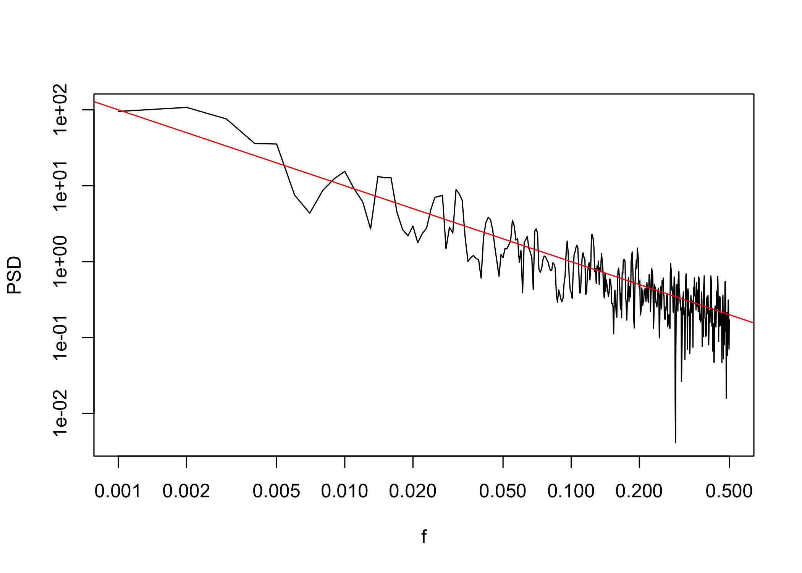
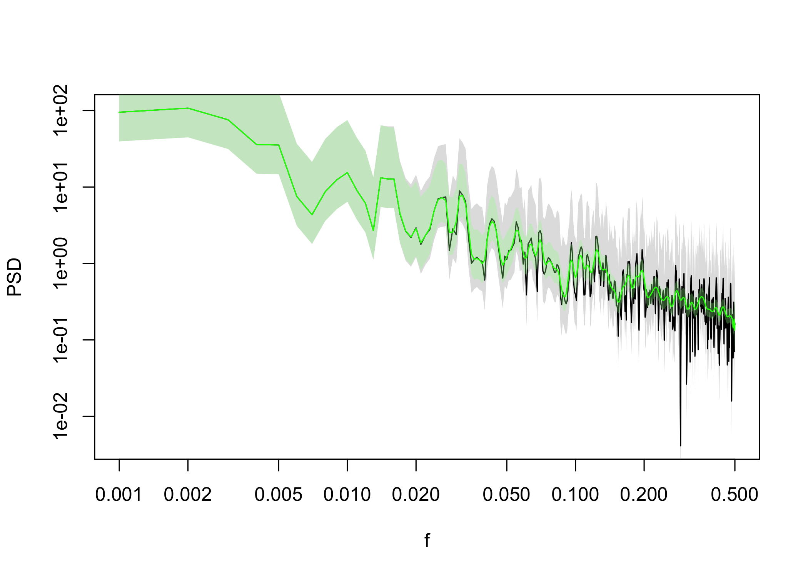

PaleoSpec is an R package to assist in the spectral analysis of timeseries, in particular timeseries of climate variables from observational, model, and proxy paleoclimate data sources. PaleoSpec contains functions to analyse existing timeseries and to generate timeseries with specific spectral properties.
Installation
You can install the development version of PaleoSpec from GitHub with:
# install.packages("remotes")
remotes::install_github("EarthSystemDiagnostics/paleospec")Please refer to function references here: https://earthsystemdiagnostics.github.io/paleospec/reference/index.html
Usage
Estimating power spectra
SpecMTM can be used to estimate the power spectrum of a timeseries using the multitaper method.
Here we estimate the spectrum of the monthly sunspot data that comes with R. The sunspot data are already a timeseries object so SpecMTM knows the correct frequency of the observations. We can plot the power spectrum with the PaleoSpec function LPlot.
sunspot <- datasets::sunspot.month
plot(sunspot)Alternatively we can use the gg_spec() function to get a ggplot2
gg_spec(sp_sun)
#> Scale for colour is already present.
#> Adding another scale for colour, which will replace the existing scale.
Appproximate confidence intervals can be added with the function AddConfInterval()
sp_sun <- AddConfInterval(sp_sun)
gg_spec(sp_sun)
#> Scale for colour is already present.
#> Adding another scale for colour, which will replace the existing scale.
Simulating timeseries with given spectral properties
SimPLS can be used to create a timeseries whose power spectrum has powerlaw like properties, where: S(f) = αf−β
# setting the seed of the random number generator so that this example will
# always generate the same time series
set.seed(20221109)
# length of the time series
N <- 1e04
# parameters of the powerlaw spectrum
alpha <- 0.1
beta <- 1
ts1 <- SimPLS(N = N, b = beta, a = alpha)
plot(ts1, type = "l")SpecMTM can again be used to estimate the power spectrum using the multitaper method. If we convert the vector from SimPLS to a timeseries object, and add information about the sampling frequency of the timeseries then SpecMTM will have the correct frequency axis.

You can add confidence intervals to the spectral estimates with AddConfInterval
sp1 <- AddConfInterval(sp1)
LPlot(sp1)
abline(log10(alpha), -beta, col = "red")The LogSmooth function can be used to smooth power spectra with equally spaced filter in log-space.
